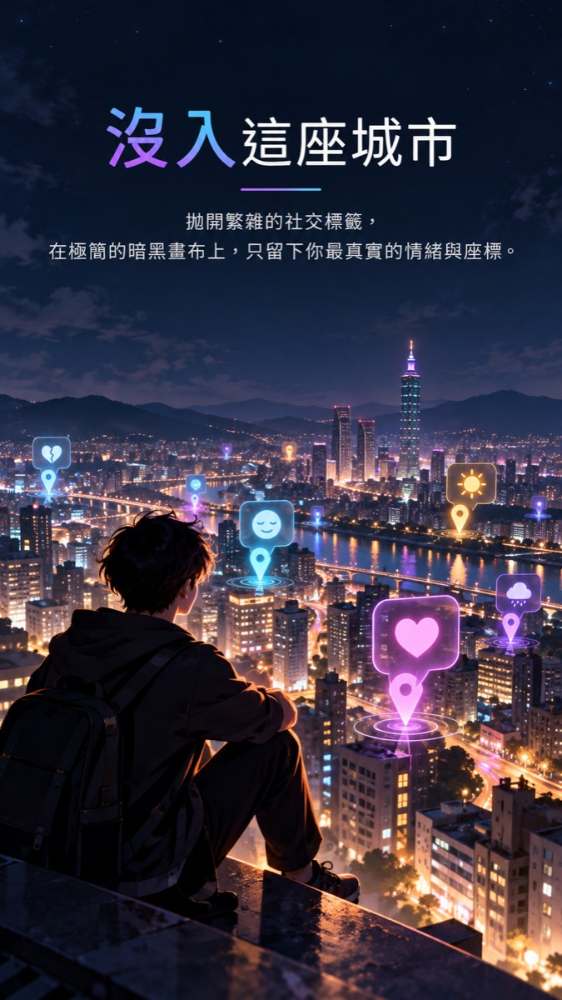
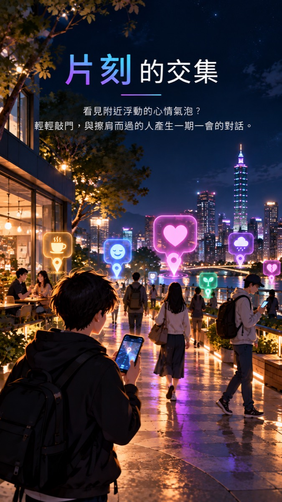
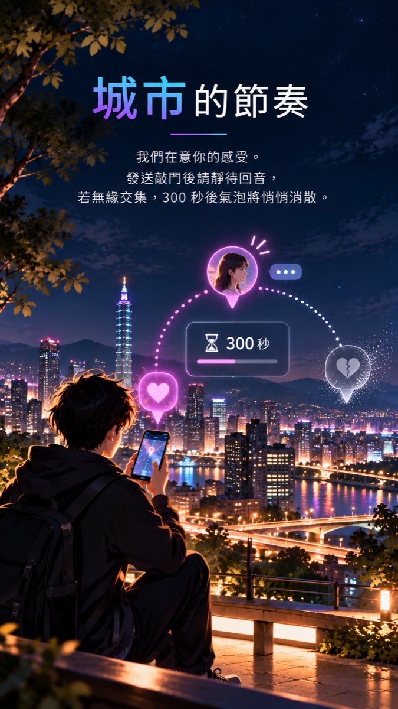
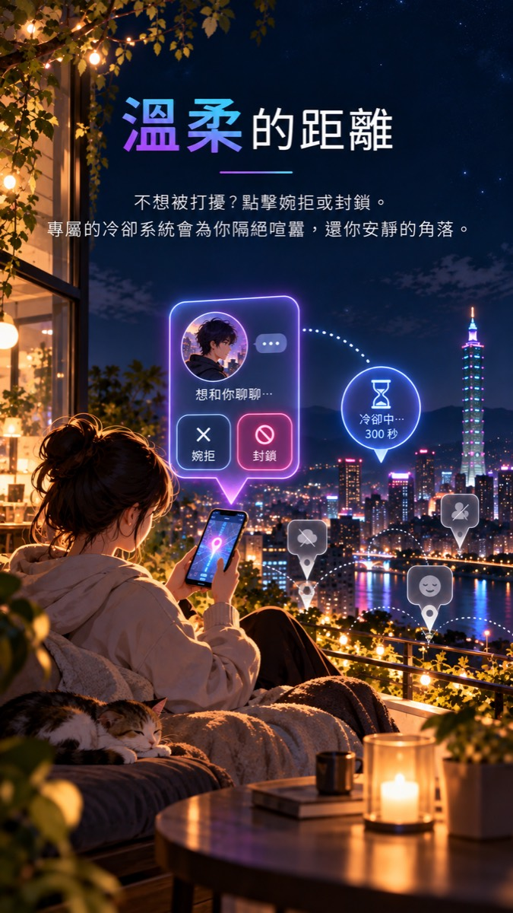
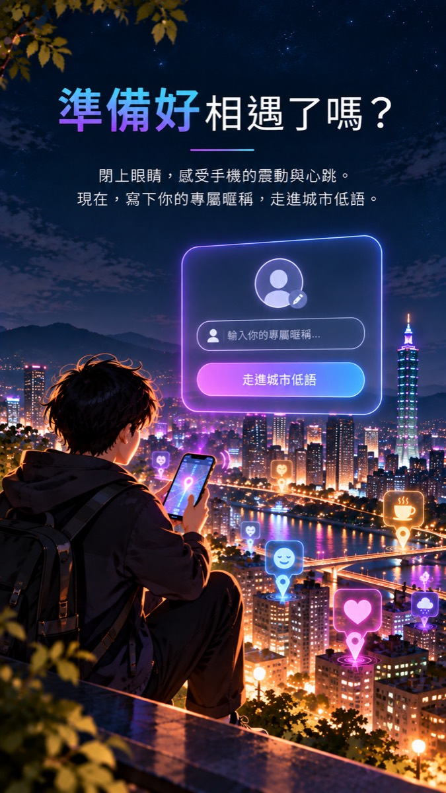

今晚，你的心情
在城市裡發光
城市低語是一座夜裡的城市。寫下此刻的心情，它會化成一顆會呼吸的氣泡，浮在你所在的街區。看見附近的心情，送出一道微光，或輕輕敲門，與擦肩而過的人產生片刻的交集。
App Store即將推出
Google Play即將推出

城市低語是一座夜裡的城市。寫下此刻的心情，它會化成一顆會呼吸的氣泡，浮在你所在的街區。看見附近的心情，送出一道微光，或輕輕敲門，與擦肩而過的人產生片刻的交集。
不需要帳號、不需要真名。只留下你此刻的心情與座標。




我們對騷擾、色情與仇恨內容零容忍。